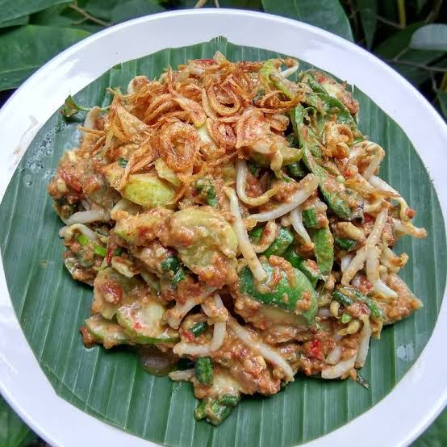
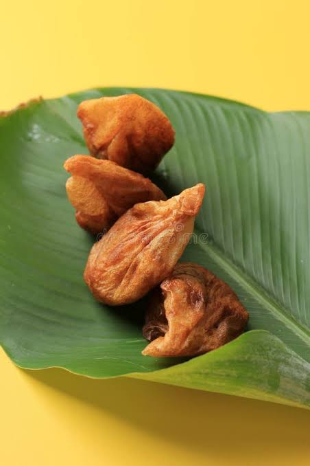
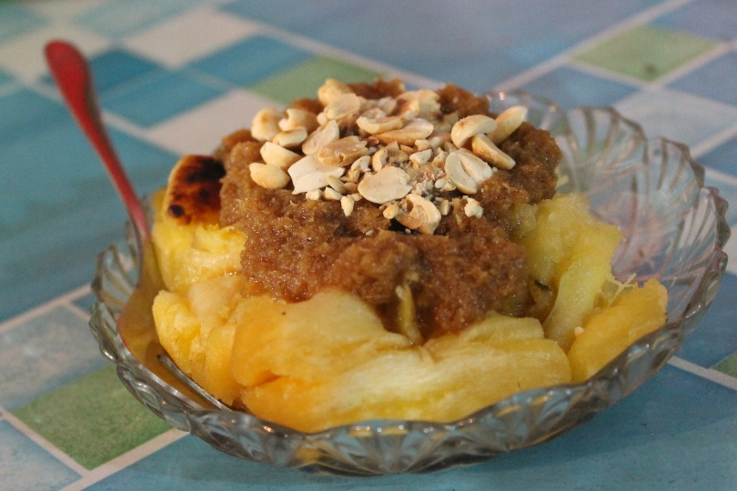
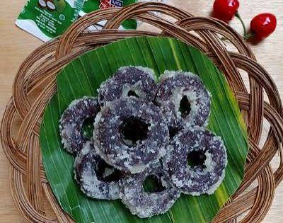
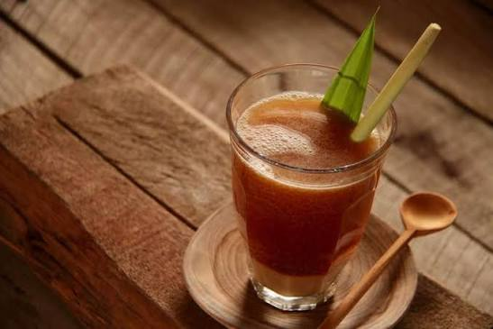

Eksplorasi Kuliner Jawa Barat
Temukan berbagai makanan, jajanan, minuman, dan oleh-oleh khas Jawa Barat bebas sesuai selera Anda.

Empal Gentong
Asal: Kab. Cirebon
Gulai daging sapi dimasak dalam gentong tanah liat berkuah santan gurih.
Bahan utama: Daging Sapi, Jeroan, Santan, Bumbu Rempah Kuning, Daun Kucai.
Karakter Rasa: Gurih Santan, Rempah Harum, Daging Empuk.
Estimasi Harga: Rp 25.000 - Rp 45.000 / porsi

Mie Kocok Bandung
Asal: Kota Bandung
Mie kocok Bandung adalah hidangan mie kuah kaldu sapi khas kota Bandung yang terkenal dengan isian kikil melimpah dan teksur mie yang lembut.
Bahan utama: Mie kuning, Kaldu Sapi, Kikil, Tauge, Bakso.
Karakter Rasa: Gurih, Kental, Rempah kuat.
Estimasi Harga: Rp 25.000 - Rp 40.000 / porsi

Karedok
Asal: Kab. Sumedang
Karedok adalah makananan tradisional khas Sunda, yang terbuata dari campuran sayuran mentah segar dan disiram dengan bumbu kacang gurih.
Bahan utama: Kacang Panjang, Timun, Tauge, Kol, Daun Kemangi, Terong Bulat, Bumbu Kacang, Kencur.
Karakter Rasa: Segar, Gurih, Manis, Pedas.
Estimasi Harga: Rp 12.000 - Rp 42.000 / porsi

Burayot
Asal: Kab. Garut
Jajanan khas Sunda yang berasal dari Garut, jajanan pasar ini terkenal karena memiliki bentuk unik dan cita rasa manis legit yang khas.
Bahan utama: Tepung Beras, Gula Merah, Minyak Kelapa.
Karakter Rasa: Manis Legit, Gurih.
Estimasi Harga: Rp 15.000 - Rp 50.000 / porsi

Colenak
Asal: Kota Bandung
Kudapan manis tradisional yang dibuat dari tape bakar dan disantap dengan cara dicocol ke dalam lelehan gula merah serta parutan kelapa.
Bahan utama: Tape Singkong, Gula Merah, Kelapa.
Karakter Rasa: Manis, Segar, Gurih.
Estimasi Harga: Rp 5.000 - Rp 35.000 / porsi

Jalabia
Asal: Kab. Bekasi
Kue ini memiliki bentuk yang menyerupai donat kecil, namun memiliki karakteristik tekstur dan rasa yang sangat berbeda dengan donat modern.
Bahan utama: Tepung Ketan, Kelapa Parut, Santan, Garam.
Karakter Rasa: Manis, Gurih, Legit.
Estimasi Harga: Rp 2.000 - Rp 2.500 / buah

Bandrek
Asal: Priangan
Minuman tradisional yang terbuat dari perpaduan jahe bakar, gula aren, dan berbagai rempah alami yang disajikan hangat.
Bahan utama: Jahe Bakar, Gula Aren, Rempah Alami.
Karakter Rasa: Pedas & Hangat, Manis, Aroma Rempah.
Estimasi Harga: Rp 5.000 - Rp 12.000 / gelas

Es Cuing
Asal: Kota Cirebon
Es Cuing adalah minuman segar khas Cirebon yang mirip dengan es cincau.
Bahan utama: Jeli Cuing, Kuah Santan, Pemanis.
Karakter Rasa: Gurih, Manis, Segar.
Estimasi Harga: Rp 5.000 - Rp 9.000 / gelas

Bir Kotjok
Asal: Kota Bogor
Minuman tradisional khas Bogor yang terbuat dari rempah-rempah alami dan tidak mengandung alkohol sama sekali.
Bahan utama: Jahe Merah, Kayu Manis, Cengkeh, Gula Aren, Kapulaga.
Karakter Rasa: Segar, Hanget, Manis, Pedas.
Estimasi Harga: Rp 5.000 - Rp 7.000 / gelas

Wajit Cililin
Asal: Kota Bandung
Kudapan tradisional legendaris yang bercita rasa manis, legit, dan bertekstur kenyal.
Bahan utama: Beras Ketan, Kelapa Tua, Gula Merah, Gula Pasir.
Karakter Rasa: Gurih, Legit, Kenyal.
Estimasi Harga: Rp 12.000 - Rp 60.000 / kemasan

Ali Agrem
Asal: Kab. Karawang
Ali Agrem biasa dikenal juga sebagai kue cincin adalah makanan tradisional yang berbentuk seperti donat, namun tekstur nya lebih padat.
Bahan utama: Tepung Beras, Gula Merah, Gula Pasir, Minyak Goreng, Air
Karakter Rasa: Padat, Manis, Legit.
Estimasi Harga: Rp 1.000 - Rp 1.500 / buah

Papais
Asal: Kab. Subang
Kue basah tradisional yang bertekstur lembut dan kenyal, dengan cita rasa manis legit atau gurih.
Bahan utama: Tepung Beras, Tepung Ketan, Santan, Pisang.
Karakter Rasa: Manis, Lembut, Kenyal.
Estimasi Harga: Rp 25.000 - Rp 30.000 / porsi